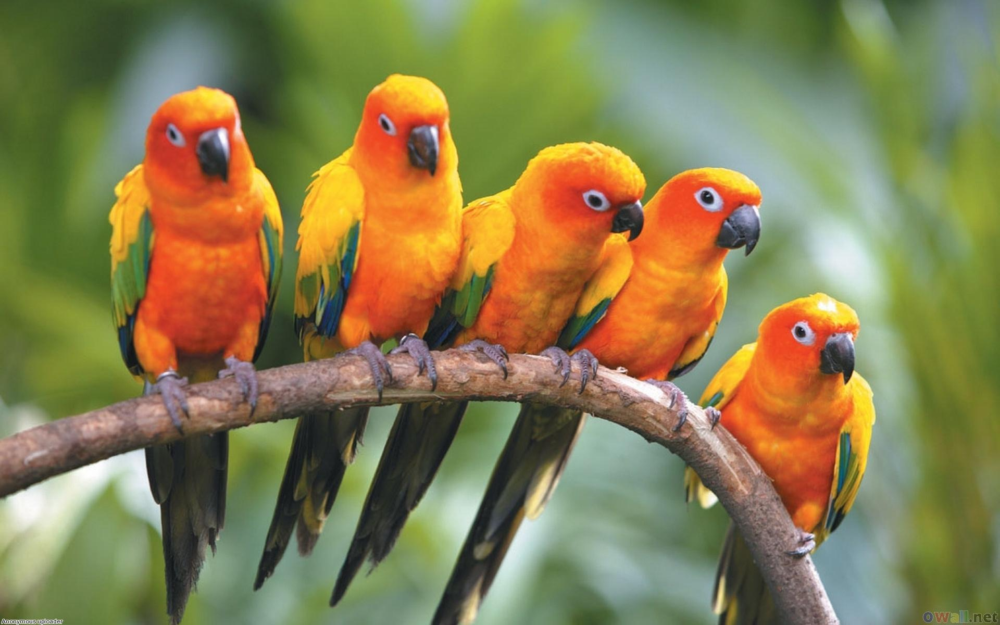

About Me

They all spoke at the same time so I don't know who said it:
parrot: Hello there...
parrot: or did I say that?: More about me will be updated soon, picture included
parrot: Sorry I am late to the shot. Did I mis anything?
parrot: Yup, you missed an 's'
parrot: scoot over a little to your left please
parrot:Image can be found at pinterest. Still looking for original source to credit. Any parrot pictures used in my pages are not mine.
parrot: I look great and I just woke up
parrot: to your other left